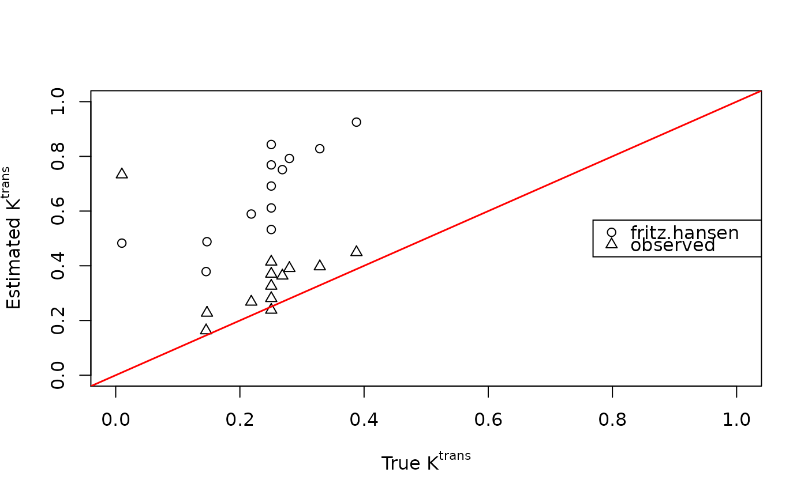

dcemri.spline-methods.RdQuantitative analysis of DCE-MRI typically involves the convolution of an arterial input function (AIF) with a nonlinear pharmacokinetic model of the contrast agent concentration. This function takes a semi-parametric penalized spline smoothing approach, with which the AIF is convolved with a set of B-splines to produce a design matrix using locally adaptive smoothing parameters based on Bayesian penalized spline models (P-splines).
dcemri.spline(conc, ...)
# S4 method for array
dcemri.spline(
conc,
time,
img.mask,
time.input = time,
model = "weinmann",
aif = "tofts.kermode",
user = NULL,
aif.observed = NULL,
nriters = 500,
thin = 5,
burnin = 100,
ab.hyper = c(1e-05, 1e-05),
ab.tauepsilon = c(1, 1/1000),
k = 4,
p = 25,
rw = 2,
knots = NULL,
nlr = FALSE,
t0.compute = FALSE,
samples = FALSE,
multicore = FALSE,
verbose = FALSE,
response = FALSE,
fitted = FALSE,
...
)| conc | Matrix or array of concentration time series (last dimension must be time). |
|---|---|
| ... | Additional variables defined by the method. |
| time | Time in minutes. |
| img.mask | Mask matrix or array. Voxels with |
| time.input | Time in minutes for observed arterial input function (default = ‘time’). |
| model | Only if |
| aif | is a character string that identifies the parameters of the
arterial input function. Acceptable values are: |
| user | ... |
| aif.observed | is the user-defined vector of arterial concentrations
observed at |
| nriters | Total number of iterations. |
| thin | Thining factor. |
| burnin | Number of iterations for burn-in. |
| ab.hyper | Hyper priors for adaptive smoothness parameter |
| ab.tauepsilon | Hyper-prior parameters for observation error Gamma prior. |
| k | Order of B-Splines. |
| p | Number of knots of B-Spline basis. |
| rw | Order of random walk prior. Acceptable values are 1 and 2. |
| knots | Vector of knots. Use this if you need unequally spaced knots. |
| nlr | If |
| t0.compute | If |
| samples | If |
| multicore | (logical) use the parallel package. |
| verbose | (logical) allows text-based feedback during execution of the
function (default = |
| response | If |
| fitted | If |
The maximum of the response function Fp for the masked region
is provided by default. Where appropriate, response functions, fitted
functions, and parameter estimates (along with their standard errors) are
provided. All multi-dimensional arrays are provided in nifti format.
See Schmid et al. (2009) for more details.
Schmid, V., Whitcher, B., Padhani, A.R. and G.-Z. Yang (2009) A semi-parametric technique for the quantitative analysis of dynamic contrast-enhanced MR images based on Bayesian P-splines, IEEE Transactions on Medical Imaging, 28 (6), 789-798.
Volker Schmid volkerschmid@users.sourceforge.net
data("buckley")
xi <- seq(5, 300, by=5)
img <- array(t(breast$data)[,xi], c(13,1,1,60))
mask <- array(TRUE, dim(img)[1:3])
time <- buckley$time.min[xi]
## Generate AIF params using the orton.exp function from Buckley's AIF
aif <- buckley$input[xi]
fit.spline <- dcemri.spline(img, time, mask, aif="fritz.hansen",
nriters=125, thin=3, burnin=25, nlr=TRUE)
fit.spline.aif <- dcemri.spline(img, time, mask, aif="observed",
aif.observed=aif, nriters=125, thin=3,
burnin=25, nlr=TRUE)
plot(breast$ktrans, fit.spline$ktrans, xlim=c(0,1), ylim=c(0,1),
xlab=expression(paste("True ", K^{trans})),
ylab=expression(paste("Estimated ", K^{trans})))
points(breast$ktrans, fit.spline.aif$ktrans, pch=2)
abline(0, 1, lwd=1.5, col="red")
legend("right", c("fritz.hansen", "observed"), pch=1:2)
